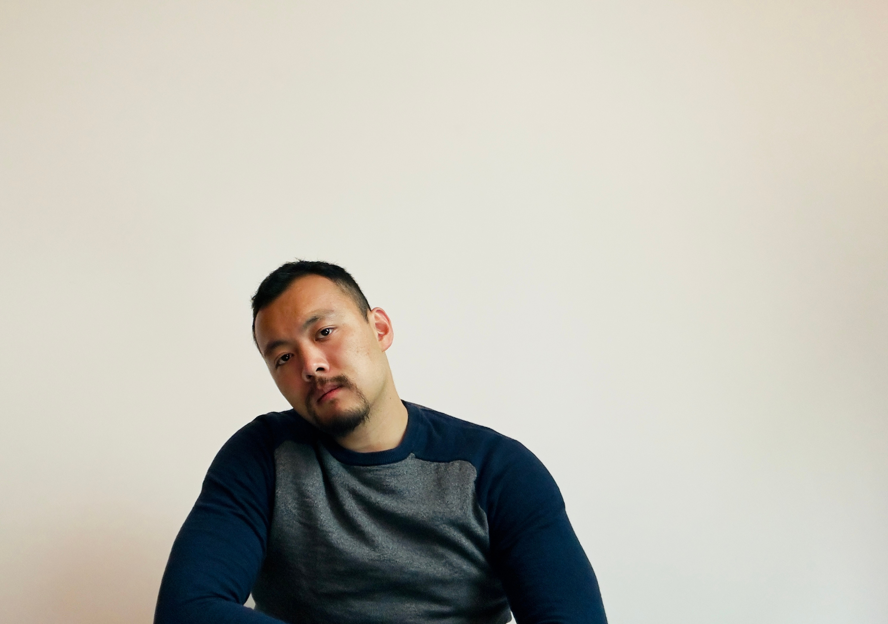

I'm a software engineer in San Francisco. I grew up in NYC, went to Stuyvesant High School, and then The University of Chicago. I've been working in the SF Bay Area as a software engineer since then. I did some work with Magic Leap's Graphics Systems team, and then went to work on Stadia at Google, before returning back to the mixed reality industry after Stadia's closure.
I'm interested in data analytics, games, simulations, and a bunch of other stuff: language processing and LLMs, choral groups (of a variety of kinds), origami, volleyball, and the meaning and patterns of human connection. I also sang and performed with Voices in Your Head during my years at UChicago, including competing three times at the ICCA Finals. More recently, I co-founded and vocal directed The Chromeatics, Google SFO's a cappella group, and I currently regularly compete in volleyball tournaments with NAGVA, and perform with SFGMC. Community is important to me, and I'm blessed to have been able to more deeply explore it post-pandemic; what it means to me, how to find it, how to create it, and how to maintain it.
Send me an email if you want to chat, work on something together, or hire me! You can find my resume here.